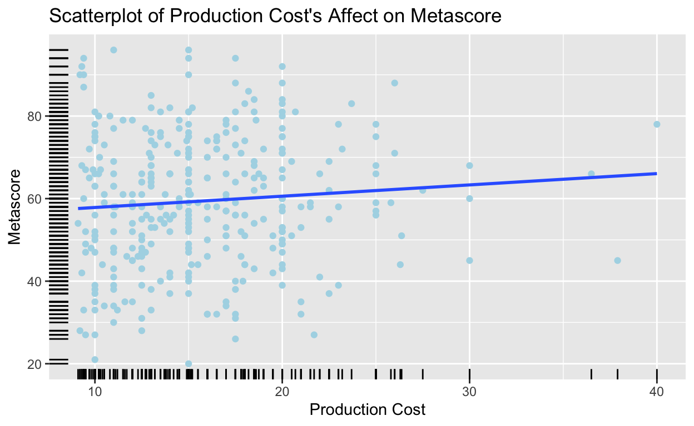
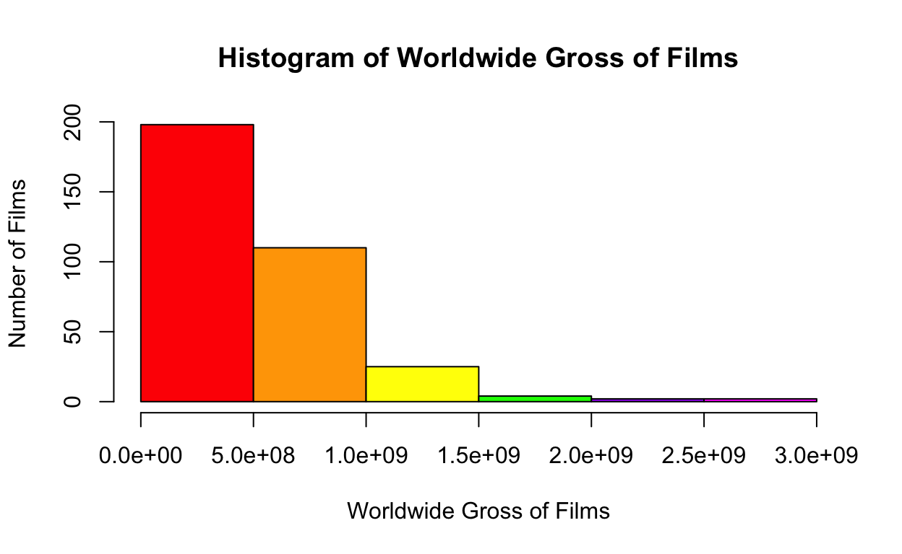
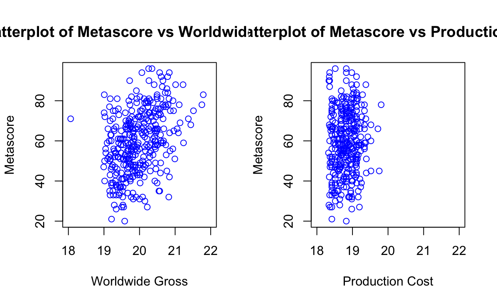
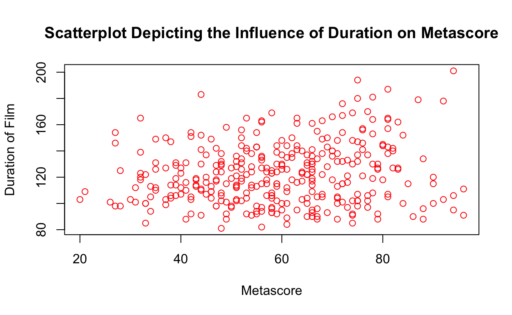
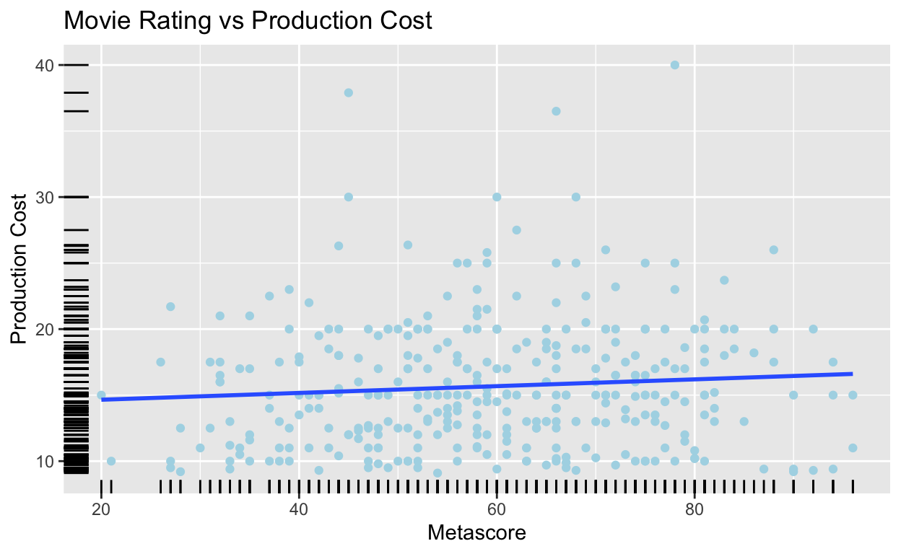

Gov 50 Final Project
Introduction
Movies are the way of the future. With hundreds of movies being released in the United States per year alone, studios must compete to win the attention of viewers. In more recent years, companies such as Netflix, Amazon Prime, and HBO Max have been employing statistics and data analytics to measure the success of their films, collecting data to determine audience preference. The film industry itself is huge, generating billions of dollars in revenue and attracting audiences worldwide. From a young age, I have always been interested in films, from wanting to be an actor to making my own original work. My personal experience with film has led me to realize that there is much more work that goes into making a great movie than meets the eye. A great movie requires top-notch actors, a brilliant story, and a dedicated production team. However, movies are also subjected to the ever-changing will of the general public. My goal with this project is to answer the research question: by what factors is a successful film defined? I hypothesize that the films with the highest prodution cost will have the highest Metacritic score, since the bigger the film’s budget, the more likely it is to get a popular score from “the world’s best critics”. I also predict that a higher production cost will yield better critic reviews since production studios had more funds to get the best talent, crew, and promotional team in order to make the movie a success.
This investigation is important as it will reveal whether monetary success can viably correlate to the way critics perceive a film. This is significant because, though it is an observational study and thus no causation can be immediately determined, I believe that it could help to better understand the dynamics of Hollywood and reflect what we as a society value in the media we consume.
Data section
The data I chose to manipulate comes from Kaggle. Specifically, I used a data set called top-500-movies which I then merged with one called Top_1000_Highest_Grossing_Movies_Of_All_Time to create a data set that included both the elements I needed to determine the production costs of various films, the worldwide gross, and Metacritic score of these films as well as data on the films themselves like their title and their duration. Now, I have data that includes everything I need to make my primary analysis regarding budgeting, gross, and reviews. I will compare everything against the Metacritic score, my independent variable. When I run my regression of the effects of production cost on critic score, a positive, significant coefficient would indicate support for my hypothesis.
Below, the code showing the data I merged can be found.
library(readr)
top_500_movies <- read_csv("~/Desktop/Gov 50 Final Project/index_files/sources/Data/top-500-movies.csv")
Top_1000_Highest_Grossing_Movies_Of_All_Time <-read_csv("~/Desktop/Gov 50 Final Project/index_files/sources/Data/Top_1000_Highest_Grossing_Movies_Of_All_Time.csv")
movie_data <- ("~/Desktop/Gov 50 Final Project/index_files/sources/Data/movie_data.csv")
View(top_500_movies)
## Merged data between top-500-movies and top-1000-highest-grossing-movies-of-all-time in order to get a dataset that includes all elements I will be examining
merged_data <- merge(top_500_movies, Top_1000_Highest_Grossing_Movies_Of_All_Time, by.x = "title", by.y = "Movie Title")
## Remove duplicate titles
library(readr)
library(dplyr)
gov50movies <- merged_data |>
distinct(title, .keep_all = TRUE)After merging my data, I decided to plot the relationship between production cost and Metascore, drawing a regression line in the midst of the scatterplot. Based on the graph below, I can see a minor positive correlation between these two variables, meaning that, as production cost increases, Metascore also increases slightly. Upon seeing these results, however, I was a bit less sure about the strength of this correlation, and decided to venture further into the analysis to figure out whether a correlation actually existed between production cost and Metacritic score. To do this, I needed to run a regression and figure out what exactly are the significant coeficients within my data, and if production cost is really one of them.
write.csv(gov50movies, "~/Desktop/Gov 50 Final Project/index_files/sources/Data/gov50movies.csv", row.names = FALSE)## Plotting production cost vs movie rating
library(readr)
library(ggplot2)
# Read the dataset
gov50_movies <- read_csv("~/Desktop/Gov 50 Final Project/index_files/sources/Data/gov50movies.csv")
## as.numeric
gov50_movies$production_cost <- as.numeric(gov50_movies$production_cost)
gov50_movies$Metascore <- as.numeric(gov50_movies$Metascore)
# Adjust production cost to be in tens of millions
gov50_movies$production_cost <- gov50_movies$production_cost / 10000000
# Create the scatter plot
ggplot(gov50_movies, aes(x = production_cost, y = Metascore)) +
geom_point(color = "lightblue") +
theme_classic() +
labs(title = "Scatterplot of Production Cost vs Metascore",
x = "Production Cost",
y = "Metascore") + geom_smooth(method = "lm", se = FALSE) +
geom_rug() +
theme_grey()
Results section
As it turns out by my visualization below, my coefficient of interest was not statistically significant. I know this because I assigned a star value (from * being the least significant to *** being the most significant). This was done based on the assigned p-values from highest to lowest threshold. The p-value itself signifies the probability that, when a null hypothesis is true, the statistical significance will be either equal to or more inaccurate to the actual observed results.
First, however, I wanted to see whether there could possibly be another coefficient I could observe to draw conclusions from my analysis. I decided that worldwide gross revenue would be a good observable outcome that could yield significant results. My rationale was that, the more money a production company yields from a film (aka their box-office success) represents the amount of people who have gone to see it. As such, popularity could correlate to a good critic score. Nonetheless, I was still doubtful that any result would be found from this specific analysis, since popular films that appeal to the general public do not always appeal to a critical eye.
I chose here to observe via a histogram the preliminary visualization of number of films and their worldwide gross. Based on my results, I found that my data was heavily right-skewed and needed to be calibrated.
hist(gov50movies$worldwide_gross,
main = "Histogram of Worldwide Gross of Films",
xlab = "Worldwide Gross of Films",
ylab = "Number of Films",
col = c("red", "orange", "yellow", "green", "purple", "magenta"))
To remedy my skewed data and create an output of meaningful results, I decided to use the log function on my worldwide_gross column. The resulting model summary table shows that, compared to the production cost, the worldwide gross is far more statistically significant. The positive value of 11.912 obtained also indicates a positive slope meaning that there is a strong correlation between a movie that does well at the box office and a high Metascore. It also represents the estimated change of worldwide gross as it relates to incremental changes in budget. Moreover, since the stars indicate that p < 0.001, it is suggested that the null hypothesis will be rejected since worldwide gross is associated with a significant effect on the dependent variable (Metascore).
## Because my data is too skewed, I will use log
model <- lm(Metascore ~ log(worldwide_gross), data = gov50movies)
model2 <- lm(Metascore ~ log(worldwide_gross) + production_cost, data = gov50movies)
modelsummary::modelsummary(list(model, model2), stars = TRUE)| (1) | (2) | |
|---|---|---|
| (Intercept) | −158.073*** | −179.632*** |
| (27.852) | (29.772) | |
| log(worldwide_gross) | 10.897*** | 12.260*** |
| (1.395) | (1.549) | |
| production_cost | 0.000* | |
| (0.000) | ||
| Num.Obs. | 341 | 341 |
| R2 | 0.153 | 0.162 |
| R2 Adj. | 0.150 | 0.157 |
| AIC | 2799.3 | 2797.3 |
| BIC | 2810.8 | 2812.6 |
| Log.Lik. | −1396.640 | −1394.654 |
| RMSE | 14.54 | 14.45 |
| + p < 0.1, * p < 0.05, ** p < 0.01, *** p < 0.001 |
Next, I created a plot of the significant correlation I found to visually analyze my results. Though statistically significant, I cannot argue that the relationship observed is causal as this is still just an observational analysis. In my data, I am encountering the problem of counterfactuals as I am only using a data set that includes the top 1000 highest grossing films of all time. As such, I don’t have the data to compare how films that didn’t do exceptionally well at the box-office succeeded in the critics’ point of view. This constitutes a potential confounding bias for my data. Moreover, there could certainly be other confounding variable which effect the outcome of my results. Perhaps critics are more likely to praise well-liked films regardless of budget or box-office success. Alternatively, well known actors and directors are often able to bring in millions of dollars, especially within a franchise. Perhaps critics are also likely to rate a movie highly if they like the work of these well-known figures. Alternatively, since I observed a strong correlation between gross and critic reviews, I wonder if the Metascore affects the worldwide gross and if so, to what extent? While I do not have the data, specifically temporal data, to draw any conclusions on this end, I find it an interesting investigation for future analyses.
par(mfrow = c(1, 2))
plot(log(gov50movies$worldwide_gross), gov50movies$Metascore,
main = "Scatterplot of Metascore vs Worldwide Gross",
xlab = "Worldwide Gross",
ylab = "Metascore",
xlim = c(18, 22),
col = "blue")
mean_worldwide_gross <- mean(gov50movies$worldwide_gross)
sd_worldwide_gross <- sd(gov50movies$worldwide_gross)
# Create a sequence of x values for the normal distribution curve
x_values <- seq(18, 22, length = 100)
# Calculate the corresponding y values for the normal distribution curve
y_values <- dnorm(x_values, mean = mean_worldwide_gross, sd = sd_worldwide_gross)
# Add the normal distribution curve to the plot
lines(x_values, y_values, col = "red", lty = 2)
plot(log(gov50movies$production_cost), gov50movies$Metascore,
main = "Scatterplot of Metascore vs Production Cost",
xlab = "Production Cost",
ylab = "Metascore",
xlim = c(18, 22),
col = "blue")
null hypothesis = smth…
worlwide = indepvariable production = control variable
Mention: observational data, cannot argue causal relationship. to improve model, using first main variable then other variable for confounding variables.
library(ggplot2)
model3 <- lm(Metascore ~ log(worldwide_gross) + Duration, data = gov50movies)
plot(gov50movies$Metascore, gov50movies$Duration,
main = "Scatterplot Depicting the Influence of Duration on Metascore",
xlab = "Metascore",
ylab = "Duration of Film",
col = "red")
library(readr)
library(ggplot2)
# Read the dataset
gov50_movies <- read_csv("~/Desktop/Gov 50 Final Project/index_files/sources/Data/gov50movies.csv")
# Convert 'gross' to numeric if it's not already
##remove currency??
gov50_movies$worldwide_gross <- as.numeric(gov50_movies$worldwide_gross)
# Scale gross to be in tens of millions
gov50_movies$gross <- gov50_movies$worldwide_gross / 10000000
# Create the scatter plot with a line of best fit
ggplot(gov50_movies, aes(x = year, y = worldwide_gross)) +
geom_point() +
geom_smooth(method = "lm", color = "blue") + # Adds a linear regression line
theme_minimal() +
labs(title = "Year Released vs Gross (in Tens of Millions)",
x = "Year Released",
y = "Worldwide Gross (Tens of Millions)")
## How many of the highest grossing movies have won Oscars?
# Load the required library
library(readr)
library(dplyr)
# Read the datasets
gov50_movies <- read_csv("~/Desktop/Gov 50 Final Project/index_files/sources/Data/gov50movies.csv")
oscar_awards <- read_csv("~/Desktop/Gov 50 Final Project/index_files/sources/Data/the_oscar_award.csv")
# Merge the datasets on the movie title
# Replace 'movie_title_column' with the actual column names if they are different
oscar_gov <- merge(gov50movies, oscar_awards, by.x = "title", by.y = "film")## Selecting only specific columns for Oscars
threshold <- 85
percentage_true <- mean(oscar_gov$winner == TRUE) * 100
# Print the result
cat("Percentage of TRUE outcomes:", percentage_true, "%\n")Percentage of TRUE outcomes: 30.43478 %